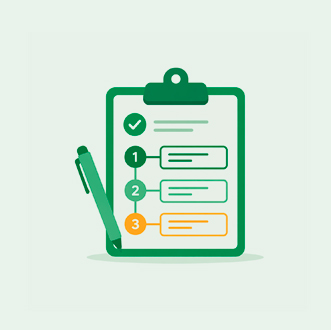

Acompanhe transmissões, encontros virtuais e conteúdos relacionados ao Plano Estadual de Educação.
Acompanhe a organização das principais ações, encontros e prazos previstos para a construção do plano.

Consulte o andamento das etapas de elaboração do PEE 2026-2036 e acompanhe os marcos de cada fase.

Veja a programação de reuniões, transmissões e momentos de diálogo sobre os temas do Plano Estadual de Educação.